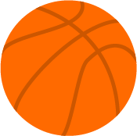

Michael Jeffrey Jordan
linha do tempo da lenda do basquete
A memorável vida de
Michael Jordan
-
Nasce Michael Jordan
17 de fevereiro de 1963Born in Brooklyn, N.Y., to parents James Sr. and Deloris Jordan.
-
Cortado da Equipe
1979Cut from the varsity team at Laney High in Wilmington N.C.
-
McDonald’s All-American
1981After two varsity seasons, is selected a McDonald’s All-American and accepts a scholarship to University of North Carolina.
-
Arremesso na final do torneio
29 de março de 1982Makes game-winning shot in NCAA tournament final against Georgetown.
-
3ª seleção do NBA Draft
19 de junho de 1984Selected No. 3 by the Chicago Bulls in the NBA draft after centers Hakeem Ojaluwon and Sam Bowie.
-
Jogos Olímpicos de Verão de Los Angeles
10 de agosto de 1984Scores 20 points in gold-medal game in the L.A. Summer Olympics.
-
Rookie do ano
16 de maio de 1985Selected rookie of the year after averaging 28.2 points, 6.5 rebounds and 5.9 assists.
-
Air Jordan I
15 de setembro de 1985Air Jordan 1 basketball shoes released by Nike.
-
Quebra o pé esquerdo
29 de outubro de 1985Breaks his left foot in a game at the Golden State Warriors, misses the next 61 games before returning in time for end of season and playoffs.
-
Bate recorde da NBA
20 de abril de 1986Scores an NBA-record 63 points in a playoff game, a 135-131 overtime loss to Boston.
-
Primeiro título de pontuação
16 abril 1987Scores 61 points in a loss to Atlanta, capping three-game stretch during which he averages 54.7 points. Wins first of 10 scoring titles.
-
Vence Dominique Wilkins no NBA dunk
06 de fevereiro de 1988Defeats Dominique Wilkins in the NBA dunk contest in Chicago. It’s the second consecutive dunk contest win for Jordan. One night later, wins his first All-Star game MVP award.
.
.
.
Eu jogo para vencer, seja durante o treino ou em uma partida de verdade. E não vou deixar nada entrar no meu caminho e do meu entusiasmo competitivo para ganhar.
Algumas pessoas gostariam que algo acontecesse. Algumas desejam que aconteça. E outras fazem acontecer.
-- Jordan, Michael
Referências:
Wikipedia: Michael Jordan. (Acesso em 27 de Novembro de 2021)
Michael Jordan: A timeline of the NBA legend. (Acesso em 27 de Novembro de 2021)